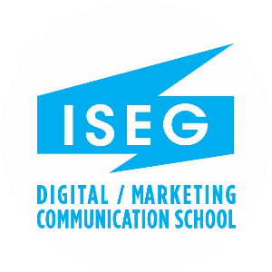

j'envisage de devenir community manager car j'adore le dommaine de la communication et des reseaux sociaux
 community manager
community manager
pour faire ce metier ou pour etre dans le dommaine de la communication et marcketig je dois prendre comme specialtite:
apres un bac general je vais me diriger vers une ecole privee de comm et marketing
 iseg